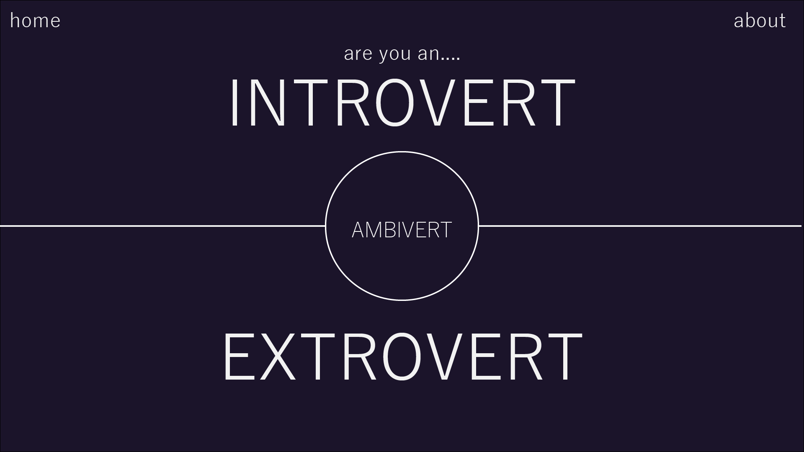
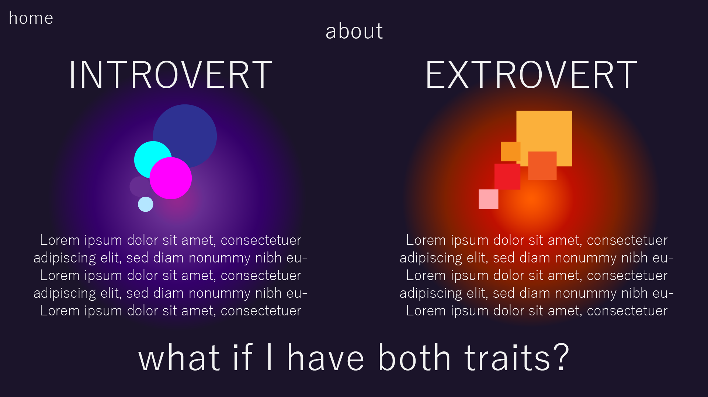
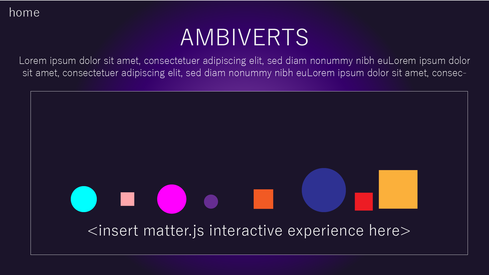

For my final project proposal, I want to expand upon my Exercise 5 concept by utilizing a new javascript library matter.js. Below is a quick example of fiddling with matter.js:
I was planning on adding an "about" page to Exercise 5 that contain more information about the differences between introverts and extroverts as I really liked the suggestion that it could be used for education. I also was planning on adding another section for ambiverts with a specific matter.js interaction. Below are pictures of how I am envisioning it:
  